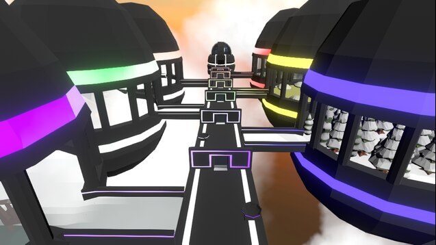

Fruits: Fall Flat is a Human: Fall Flat level that I made as an experiment. I was interested in using Unity and Blender, and so when I found the tutorials on how to make a Human: Fall Flat Level, I wanted to make a level myself. I mostly used the assets provided by Human: Fall Flat, but I also made some assets in Blender, such as the egg-shaped islands and fruits. For this level, the player goes through 7 different sub-levels that require the player(s) to parcour, find items, and perform simple tasks to collect fruits to place in the baskets. When placed, the door to the next sub-level opens. When finished with all 7 levels, the player is hurled to the last island, where entering the pipe marks the end of the level.